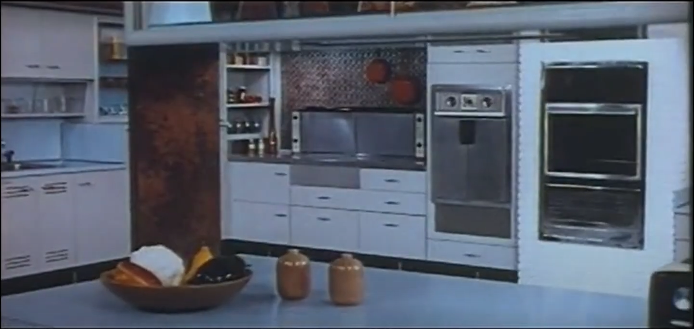
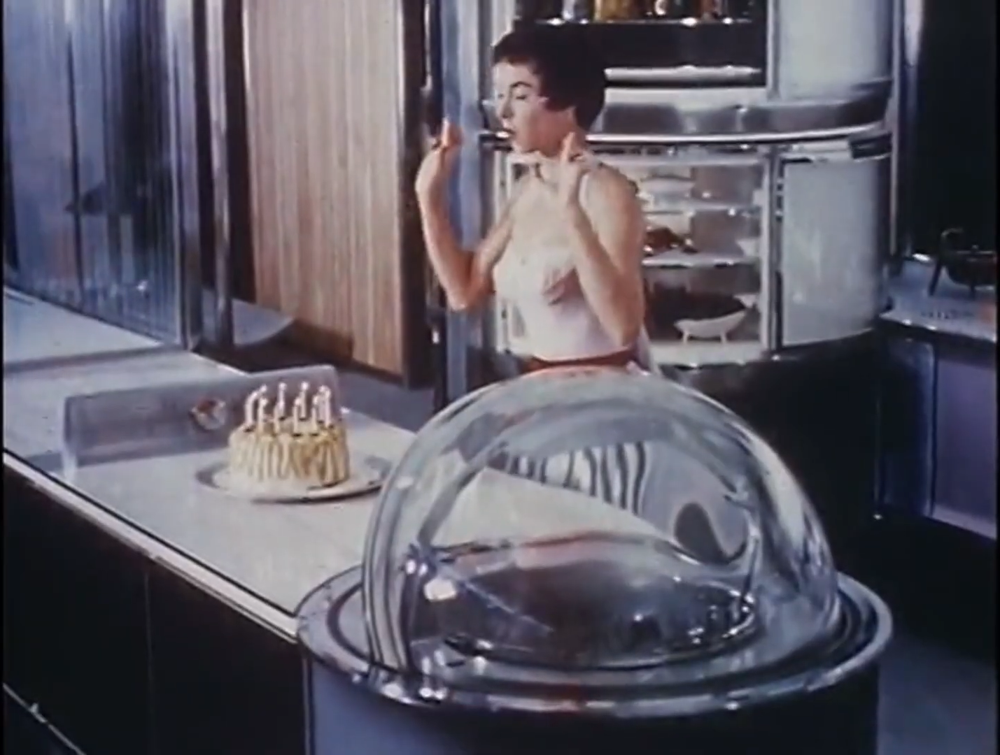
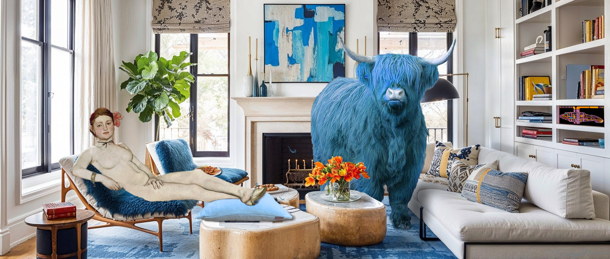
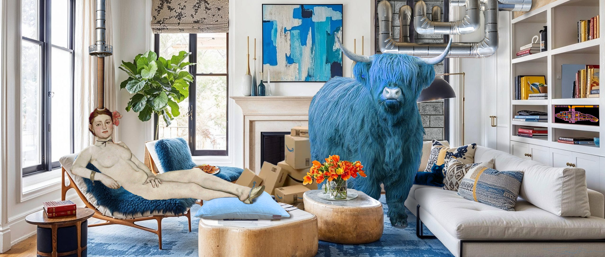

Artist's reflection
For inspiration I drew from my long-standing fascination with the depiction of the future from the perspective of humanity’s past. I, and others, refer to this as yesterday’s tomorrow. This concept of yesterday’s tomorrow provides fertile ground for exploring how we as a society project our hopes, dreams, and fears forward in time. Certainly this is easy enough to see in science fiction literature and films; it’s a genre that often employs allegory wrapped in a future-shaped package to comment on our present. In this capacity, it is intentional and premeditated. Watching any Star Trek episode from the original series to Voyager will demonstrate this packaging fairly succinctly. However, depictions of the future also exist outside the realm of science fiction in the shape of marketing films. The 1940s through the 1970s were filled with marketing films from the likes of AT&T, Frigidaire, Chevrolet, IBM and many other corporations large and small. Many of these films were meant to show a bright future made ever more so by the company’s products of tomorrow. They depicted the kitchen, car, subway, telephone of tomorrow. In these depictions the future was always bright, and shiny, and convenient. The future, as seen from the early-post World War II era into the mid Vietnam war era was going to be just swell.
My core concept for this project was to build a short film made of found footage that took the hopeful, shiny, clean, and always convenient examples of yesterday’s future tech and slowly twist and cut and clip and reconfigure it to fit more closely the world we have crafted due to our inextinguishable hubris and desire for convenience and quantity over quality and kindness. The media for the film came from the Prelinger Archives and I further confined my available films to those that specifically depicted kitchens of the future and the future of humanity in space.


I also sought a soundtrack for the piece that would provide both a tempo and a commentary on the chosen clips through voiceover and lyrics. I decided to combine two of songs whose lyrics, when edited together, helped tell the story. I chose Laura Veirs’ Galaxies, and The Church’s Under the Milky Way Tonight.
In their reimagined form the two songs intermingle to form a unified whole that both narrates and drives the visual story; the lyrics interact with the visuals as both cause and effect.
In evaluating the final piece with the distance of a few days from finishing it I have a few observations. First, there are a few things I would change listed here in no particular order. Every time I watch the piece I wish that there was some additional message that appeared in the black bars to the left and right of the 4:3 frame.
Our modern eyes are used to seeing a 16:9 frame, and YouTube and other streaming services are tuned to this aspect ratio. I feel this space is perfect for commentary simply due to its location in the frame. This commentary would be an evaluation of our past’s hope for our future that never was from the future that we created. I would love to be able to remix the song using pristine audio stems: separate instrumental and vocal tracks. I’ve asked both artists if they might be able to make these available to me, but have not yet heard back. I would also like to change the clip of the two scientists at 18 seconds, though every time I see their self-satisfied faces after the smoke clears, I question the desire to change it.
Finally, I find myself mesmerized by how editing the two songs together creates its own audio Kuleshov effect. For instance, at 1:36 Veirs sings, “When we kiss,” which is followed by The Church’s “leads you here despite your destination.” This plays over the rocket launch sequence and was done so to suggest that no matter what we do, even when we believe we are doing the right thing, our proclivity for self-destruction always rests nearby. These two songs are delightfully thematically unrelated. Steve Kilbey, The Church’s lead singer, has said in an interview that “... there are songs that operate as a premise for you to have your own adventure. Under the Milky Way is definitely one of those songs. Although it’s not really about anything at all, I just wanted to create an atmosphere and I didn’t even put a lot of thought into that.” Veirs’ Galaxies evokes deep passion, feeling and emotion that generates large-scale physicality. I would suggest that Kilbey’s song is more ambivalent, evoking feelings of loss and longing but also curiosity and desire. Putting them together yields a soundtrack that, to me, feels hopeful on the surface but ominous in its undertones.
Ultimately the piece came out better than I had originally anticipated. It needs work; it needs tightening up, some swapping of images, perhaps the addition of the “modern commentary,” but it also seems to work. It’s one of the few things I’ve made that I enjoy watching. I think a large part of this might be due to having so many obstructions in the way of making anything at all. In a way, I suppose the outcome was inevitable.
Artist's reflection:
For these two works I started with a simple idea of expressing and exploring loops. Specifically, I wanted to explore the growing infringement of AI processes on everyday human experience. I felt that I should push this to the edge of absurdity and then take at least one more step. But why loops? And what exactly is a loop in the context of this exploration?
I have been fascinated with loops for most of my life. I discovered programming at a very young age and was amazed by the power of the algorithmic loop; like a simple “for” loop or even just a “goto” loop in BASIC. This ability to iterate over a set of data, or a process, and make tiny changes each time. The realization that the starting state and the ending state could be so vastly different even though the changes that got us there were nearly imperceptible when examining a single iteration of the loop. One loop, in fact, is hardly a loop at all. If we say x=5 and then ask what 3 times x equals we get 15. One loop. If we then increment x by double it’s previous value such that it’s now 10 and then we run this loop again we get 30. Now we run it again and we get 60 and if we run it 100 times, x = 5 times 6 to the 100th power. That’s an astronomically massive number. And we got there in 100 steps of a very simple loop. Loops are power. But are they good or bad power?
When I set out to create my two (x)topias (and I’ll explain (x)topia a little further down) I wanted one to clearly depict the negative reality, the existential experience of living in a society dominated by a loop in which humans only experience the outcome, which is consumption of shiny things. Why consumption of shiny things? Because at a very basic level humans are wired to get a kick of dopamine when they experience something new that is also perceived as positive. Why? A million years of evolution during which we were seldom exposed to new and shiny, but new and shiny often meant better chances of survival. So what if AI can create a loop in which the result is the human receives new, shiny stuff? What would that reality look like to the human, from inside their cognitive reality? And what would that reality look like from the outside; from an external observer?
One image would be the internal reality, where shiny is everywhere, the utopia. The other image would be the external reality of decay and conspicuous consumption, the dystopia. They would show a clear delineation of existence.
I started with the utopia. I wanted it to be clean, bright, roomy, shiny. I wanted a single color to pop and dominate the scene. I wanted that color to be associated with clean, clear, fresh. I chose blue. Blue is water, blue is clear sky, blue is a “new” color. I also wanted a simple sense of comfort. I find shaggy things comfortable and so there’s blue shag on the lounge chairs. I wanted a sense of fancy. A blue yak. Totally preposterous, but also ultimate shag and very chill. The space needed a high-tech display. Star Trek TNG introduced the world to LCARS (it’s a type of user interface that makes very little sense, but looks super cool) so this space would have an LCARS display. The protagonist reclines in her lounge chair atop a shag blue throw, comfortable, confident, excited about what shiny new thing will come next. This scene is the inner space of the new shiny loop.
Happy with the utopia I started work on the dystopia. It needed to be everything the utopia wasn’t, orange instead of blue, dingy instead of clean, underground instead of in the light. It should be a space that is under constant surveillance, so it needed an ever-watchful camera tucked away somewhere obvious, but seemingly hidden. The protagonist, the same person from the first image, reclines, but in a chair that exudes old, musty, dark living room vibes. They’re older, sad, lost. The technology they use to ‘jack in’ is clunky and cumbersome. This scene is the existential reality of the loop.
topia_two_fourthree.png)
As I finished the dystopia I realized that in fact, it wasn’t really all that terrible of a place. Yes, it was a bit dank and dark, but it also had a sense of comfort about it, a sense of being lived-in and even loved. I went back to the utopia image and just started adding a bits here and there to make it feel more industrial, more contrived. What I discovered after a few hours of going back and forth was that I was no longer sure which was which. The utopia had somehow devolved into a shiny proto-dystopia and the dystopia had evolved into a well-worn, musty proto-utopia.
They had both crossed a threshold and contained shared DNA that bridged the gulf between utopia and dystopia. I found this delightful as my understanding of both topias is that either can step in, can represent the other, depending upon perspective. One human’s dystopia is another human’s utopia. Look at the political situation in the US right now. There are some who believe this is the greatest era of American prosperity and change ever - they are, of course, delusional and dangerous, but they exist. And there are those, among whom I count myself, who believe we’re sliding into … dystopia.
Are these images effective at telling the story of the original concept? No, not truly. In fact, I believe the sense of “loop-ness” has been significantly dialed back, particularly in (x)topia two, such that it’s difficult to see that these two images are reflections of one another. There are signs of this: both protagonists are reclining, they are on opposite sides of the image, they appear to be “jacked” into something, they exist in a space that feels surreal, dreamlike. But there is nothing overt, no one thing that strictly binds them together. Perhaps I could have added some piece of identically rendered tech and that would make the connection. Or I could have added some kind of “tether” that links the two humans in an obvious manner. But perhaps it’s best that it’s not obvious. This wasn’t my initial intent. I wanted it to be obvious. But it does create a, I believe, a strong sense of wonder and, perhaps, a desire to let the eye wander about to see find all the bits that don’t quite fit; all the bits that point to this reality not being our own.
Arist's reflection:
Imagining a logo for the Southworth Planetarium took me through my creative inspiration and planning paces. On a macro scale, inspiration tends to arrive when I have a lot of different thoughts (or half-thoughts) banging around in my head at once. There is often a critical moment where a key piece of this unknown puzzle finds me. Perhaps I’m reading an article from Art News, or Hackaday, or seeing a video on YouTube about how the Voyager probes process instructions, or I notice the way light reflects and refracts off a sliver of plastic in my studio. The spark that kindles the idea coalescence process could be almost anything. But then, it really cannot be almost anything as it usually comes from some source that is part of a relatively carefully curated collection of seemingly random input that I surround myself with. A list would be exhaustive and exhausting, but it includes the above-mentioned article and youtube sources as well as things that I have scattered around my studio; particularly toys and games. But the moment of coalescence is just that, a moment of seeing something all at once. Sometimes that image is perfectly clear, but often it’s quite fuzzy and thus invites me to explore it and ask a lot of “what if” questions.
For the planetarium I surrounded my creative space with images, ideas and other mess that suggested voyaging into the unknown, travelling through interstellar space, peering into the inky darkness that seems to occupy most of space, and a feeling of the 1970s and 1980s. I chose those two decades as they followed the planetarium boom of the 50s and 60s1 and added color and design elements I thought might be fun, like the blue, orange, green triadic palette that made it to the final design. The key ingredient was the typeface used by Stanley Kubrick in his 1968 film, 2001 A Space Odyssey. While he used Futura for much of the text in the film, he turned to Gill Sans for the title screen text. Seeing that text immediately brought up an image of the Discovery spaceship that the main characters, including Dave Bowman, use to travel to Jupiter to investigate the “anomaly.” Seeing that ship immediately reminded me of the star projector at the planetarium. Images started to cascade in my mind and the basic design for the logo was there. I was really drawn to the idea of the planetarium’s projector as a spacecraft, just like Discovery; they both have similar lines and they both offer travel beyond the rim of our pale blue dot. I quickly sketched out a version of the logo as I saw it (below) and then left it alone to sit in Illustrator and in my mind.

At this point I move into evaluate and execute mode. What do I love about the design, what do I find abrasive or disjunctive, what do I find confusing. Looking at the logo again I really didn’t like the shape of the “spaceship/projector,” it felt chunky and sits awkwardly in space. I also didn’t understand why I’d placed the “planet” upside down. While I like the way it looks, it leaves me wondering what the orange circle is in the upper right corner. I know that it’s supposed to be a distant planet, but why would a planet sit in the “atmosphere” of another planet? It didn’t ring true. I did like the colors and how they sit together. I liked the orange limb on each of the spaceship’s spheres. I liked the rising star. Knowing how I felt drove the second pass of the logo. I wanted to flip the large planet 180 degrees and find a more energetic expression of the spaceship and bring the rising star more into the foreground.
After a few hours of play I arrived at a design that I felt captured my initial vision and felt balanced and energetic (Logo Version 2). I then spent time tweaking things like the thickness of the spaceship’s orange limbs, the placement of the pale blue line through the spaceship’s spheres and the placement and alignment of the text. These tweaks brought the logo to a point where I felt comfortable sharing it.
Most of the feedback I received was relatively positive and centered around the amount of thought I put into the logo and the overall design. One piece of critical feedback I received was a desire to see the spaceship’s sphere’s stretched out further apart in the “widescreen” version of the logo in order to make better use of the available space. I absolutely agree, giving the spheres a little more space would fill out the frame more fully and give the viewer’s eye more of a journey across the logo. It could also allow for an alignment of the the left edge of the text with the left-most part of the pale blue line that connects the spaceship’s spheres, further pulling the piece together (like a good area rug).
The major critique I would give myself is that this logo is simply too busy for a “modern” logo. There are too many fine details, thus limiting its use on small screens or cramped spaces. A third pass at the logo would involve simplifying it further and spending more time with it in the form of a small app icon.
I tend to learn the same things again and again when I make something: my first idea isn’t always my best; I need to spend time away from the alpha version of the work before I come back to it; and I need to trust my eyes and heart more than my logical, reductionist mind. A quick example of this last realization is the idea of the projector as “spaceship.” It’s an interesting idea, it makes logical sense, but rendering that projector-spaceship such that it gives off a “spaceship” vibe and a planetarium “projector” vibe requires too much detail in the line work. It’s better to let the “spaceship” idea live as a piece of the final render without making it something a viewer sees immediately. It’s okay to simply suggest a thing and it’s okay if the viewer doesn’t pick up on consciously. In fact, it’s likely better that way.
You can download and view all the Adobe Illustrator files for this project here.